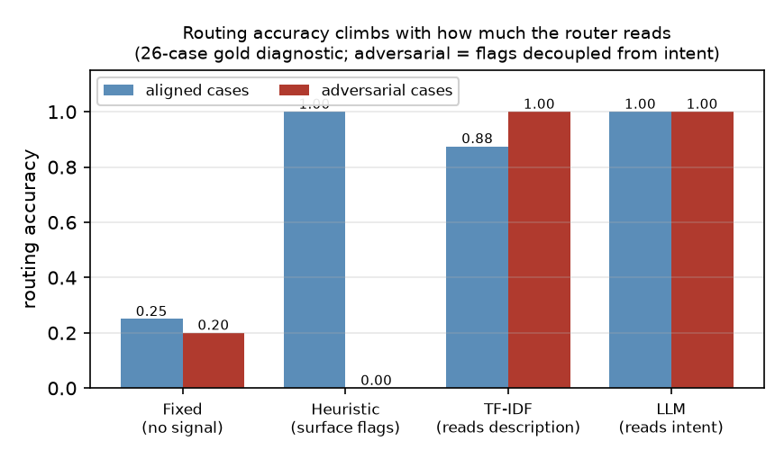
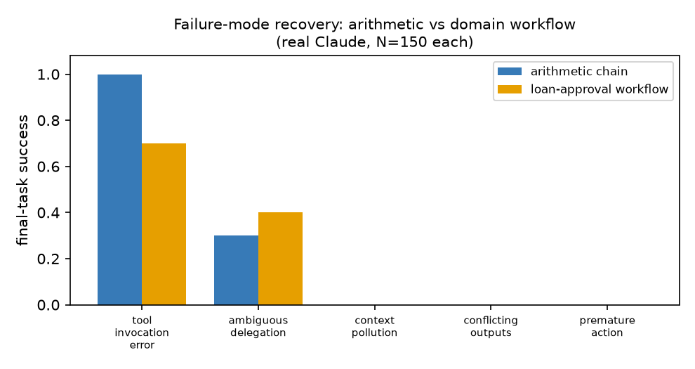
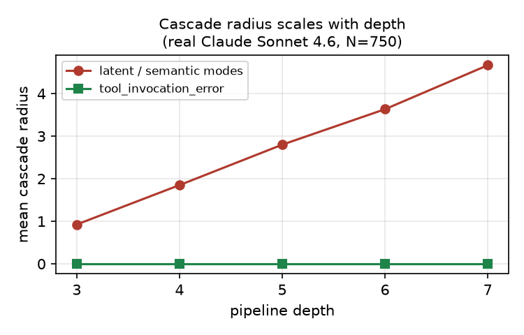
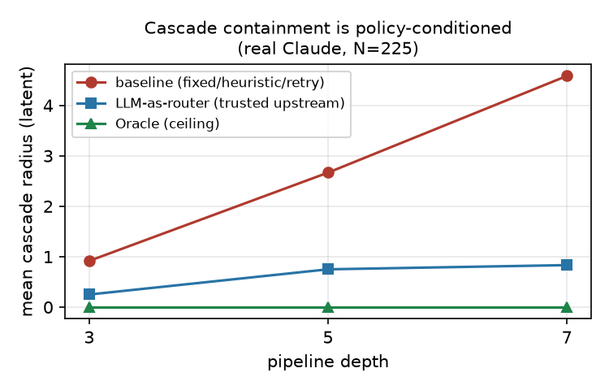

A reader-friendly guide to the benchmark's motivation, experimental
logic, main findings, and important caveats. This page is meant to help
someone understand the project quickly; the paper remains the
authoritative source.
Source of truth
Based on the current paper draft in
paper/main.pdf and the repository's
merged results as of July 15, 2026.
Audience: teammates, reviewers, managersUse: onboarding and short presentationsStatus: explanatory companion, not new evidence
Read this page when you want to answer:
What does OrchestraBench actually measure? Which results are the
real headline? What should we say carefully when discussing the
benchmark with others?
1. What this project is really about
The paper's core claim is not "Claude can solve arithmetic." It is that
orchestration reliability has its own measurable structure: systems fail
differently depending on whether the fault is visible, ambiguous, or
latent, and those failures propagate differently through a pipeline.
Existing benchmarks report final task success
→
OrchestraBench injects controlled failures
→
Measures recovery and cascade propagation
→
Compares routing and decomposition quality
Takeaway: the benchmark asks whether an orchestration
pipeline knows that it is wrong, contains the damage, and exposes useful
structure for repair, audit, or delegation.
Routing diagnostic
Exp 1, 26 cases
Failure recovery
Exp 2, N=150
Cascade by depth
Exp 3, N=750
Decomposition quality
Exp 4, N=40
2. Eight terms to know before reading the results
Multi-agent system
Multiple specialized roles or stages cooperate on one larger task.
Orchestrator
The control layer that routes, decomposes, invokes tools, and manages
retries or recovery behavior.
Routing policy
A mechanism that decides which action or execution path to take.
Failure injection
A controlled fault deliberately inserted into the run so the same case
can be reproduced.
Recovery rate
The share of injected failures after which the final answer is still
correct.
Cascade radius
How many downstream stages are corrupted by one upstream fault.
Latent failure
A hidden error that still looks plausible to the next stage.
Decomposition fidelity
How closely a produced plan matches the intended subtask structure.
3. What the benchmark adds beyond ordinary pass/fail evaluation
A single success rate cannot tell a team which component needs repair.
OrchestraBench adds controlled fault injection, per-mode recovery, and
cascade measurement so that orchestration can be debugged as a system.
Generate workflows
Template-based finance, HR, and DevOps-style task graphs with
explicit dependencies.
Choose a policy
Fixed, Heuristic, TF-IDF, LLM-as-Router, Retry, or Oracle.
Tool failures are often recoverable because the system can notice them.
Ambiguous
Some failures are partially recoverable because intent can sometimes be inferred.
Latent
Plausible wrong state is the hardest category because later stages trust it.
Structural
Pipeline depth matters because each downstream stage can inherit upstream damage.
4. Experiment 1: routing reliability is a mechanism question
This experiment is a focused diagnostic, not a giant workload leaderboard.
It asks: when surface flags are misleading, does the router still read
the task description and recover the right intent?
Policy
Aligned
Adversarial
Interpretation
Heuristic
100%
0%
Perfect when the flags are honest; collapses when the metadata misleads.
TF-IDF
88%
100%
Reading the task description is enough to solve the adversarial set.
LLM Router
100%
100%
Semantic routing also clears the adversarial set.
Interpret carefully: Exp 1 does not prove that an LLM
router is always required. It shows that description-aware routing
beats flag-only routing on this diagnostic.

The aligned-versus-adversarial split is the real story: rule-based
flag matching is brittle, while reading the description closes the gap.
Why TF-IDF matters
TF-IDF is not just a baseline. It proves that the key distinction is
"reads the description" versus "matches the flags," which makes the
routing-mechanism claim much cleaner than a simple LLM-versus-non-LLM
story.
Scope note: this diagnostic is only 26 cases and is intentionally sharp,
so the result is a mechanism probe rather than a broad production
difficulty benchmark.
5. Experiment 2: recovery splits into three tiers
Five failure modes are injected into a verifiable dependency chain and
graded against exact ground truth. The result is not a smooth decline;
it breaks into three distinct reliability tiers.
Tool invocation error
1.00
Ambiguous delegation
0.30
Context pollution
0.00
Conflicting outputs
0.00
Premature action
0.00
Tier 1: visible tool faults
The system can usually notice the failure and recompute the value by hand.
Tier 2: ambiguous intent
Recovery is partial because the model sometimes infers the intended operation.
Tier 3: latent semantic faults
Plausible wrong state survives the pipeline because later stages trust it.
Why retry does not fix the latent failures
Retry repeats the same run over the same corrupted state, so it often
extends the damage instead of repairing the cause. The paper's framing
is that latent failures need detection, attribution, and state repair,
not blind repetition.

The domain-grounded loan-approval reframing shifts absolute rates,
but the ordering of failure modes mostly persists.
Cross-model check
Across Sonnet 4.6, Opus 4.8, and Haiku 4.5 (N=150 each), the
tool-versus-latent structure stays intact. What changes is mainly the
exact ambiguous-delegation rate, not the overall tier pattern.
Once a plausible but wrong upstream value enters the chain, each
downstream stage has another chance to inherit it. The measured cascade
radius rises almost linearly with pipeline depth.
Depth
Latent cascade radius
Tool cascade radius
3
0.93
0.00
4
1.85
0.00
5
2.80
0.00
6
3.63
0.00
7
4.67
0.00

Latent or semantic failures grow with depth, while tool faults stay
contained at zero downstream corruption.
Important caveat
This depth trend is informative, but it is partly structural: the
benchmark uses a verifiable dependency chain where later stages consume
earlier values. The paper treats this as a controlled mechanism probe,
not a claim that every real workflow will scale identically.
7. Experiment 4: a correct answer can still be a poor orchestration output
Final correctness alone does not tell you whether the output is useful
for delegation, audit, or local repair. Exp 4 measures decomposition
quality directly.
Policy
Delegation fidelity
Granularity error
Final correct
Decompose
1.00
0.00
1.00
Monolithic
0.37
2.00
1.00
Headline: both policies can return the right arithmetic
answer, but only the decomposition policy exposes structure that a real
orchestrator can delegate, inspect, or recover from.
8. Policy probe: did the model detect the failure, or receive a trusted answer?
The policy-conditioned probe is useful, but it must be described
carefully: the strongest LLM row is given privileged trusted-upstream
state, so it is closer to a trusted-state repair probe than a clean
autonomous detection result.
With trusted upstream value
0.67
Latent recovery is much stronger when the model can compare current and trusted state.
Without the trusted hint
0.08
Recovery falls back toward baseline once the privileged signal is removed.

Baseline cascade grows with depth, the LLM trusted-state probe stays
low, and Oracle fully contains the latent failures.
Best wording for discussions
Say: "the probe supports trusted-state repair." Avoid saying: "the
model autonomously detects latent failures in deployment conditions."
9. What is actually novel here, and what should we say cautiously?
Failure-mode-resolved recovery
Recovery is broken out by fault type rather than collapsed into one score.
Depth-aware cascade
The benchmark measures how many downstream stages are corrupted.
Routing-conditioned analysis
The work compares fixed, heuristic, description-aware, LLM, and Oracle-style policies.
Main limitations to keep front and center
Not yet a literal multi-agent production stack
The core experiments run one Claude agent over a staged chain.
Controlled arithmetic construct
Great for exact ground truth, but still narrower than a full workflow benchmark.
Small routing diagnostic
Exp 1 is only 26 cases and intentionally saturates for stronger routers.
Single family in the core runs
The main measured experiments are on Claude Sonnet 4.6, with a Claude-tier cross-model check.
Partly structural depth growth
The cascade-by-depth result reflects dependency-chain design as well as model behavior.
Trusted-state advantage in the probe
The strongest policy-probe row benefits from privileged upstream information.
Good external framing: OrchestraBench complements prior
reliability work by making recovery structure, cascade depth, and
routing-mechanism behavior visible and reproducible.
10. How this page fits the repository
This page is not meant to replace the paper, README, or blog post. It
sits between them: more guided than the paper, more precise than a short
blog post, and easier to skim than the full repository documentation.
Use this page for
New teammates, quick stakeholder walkthroughs, talk prep, and fast
recall of the benchmark's main logic.
Do not use this page as
A standalone source of truth for exact claims, citations, or the
latest paper wording. For that, always fall back to the paper and
committed data.
OrchestraBench asks a reliability question that ordinary agent benchmarks usually skip: not just whether a pipeline finished, but whether it routed well, recognized faults, contained the damage, and exposed enough structure to recover. The main empirical pattern is a three-tier split: visible tool faults recover, ambiguous delegation only partly recovers, and latent semantic faults almost never recover. That makes detection, attribution, and trusted-state validation central mechanisms for robust orchestration.